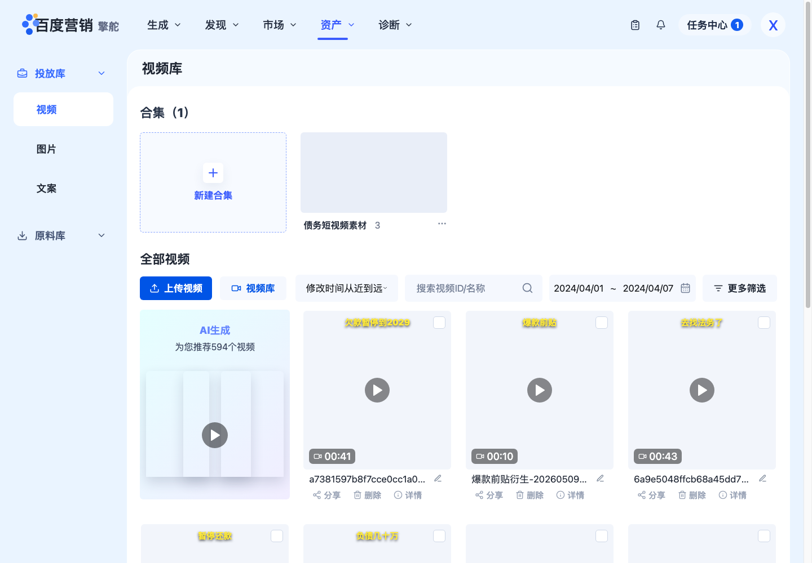
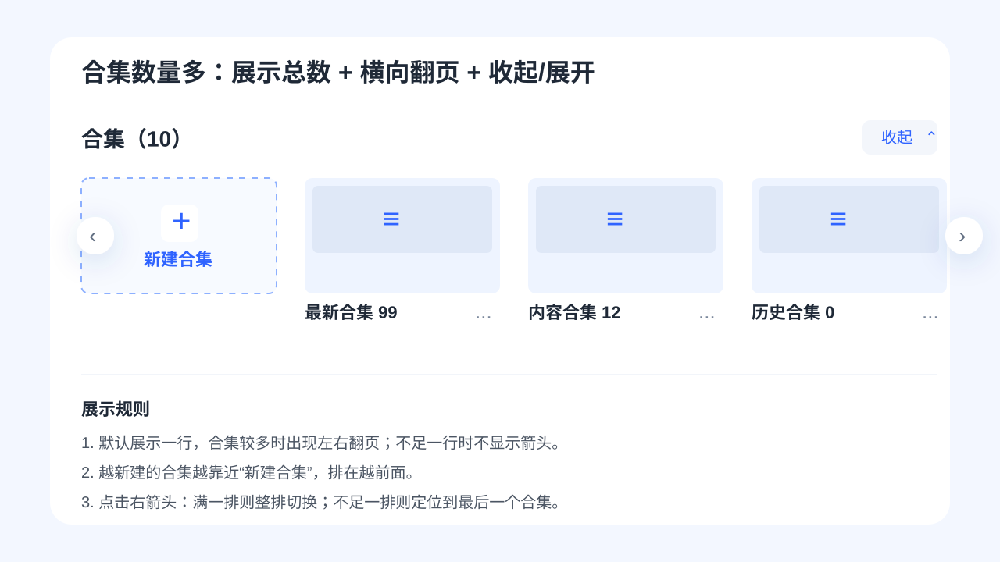
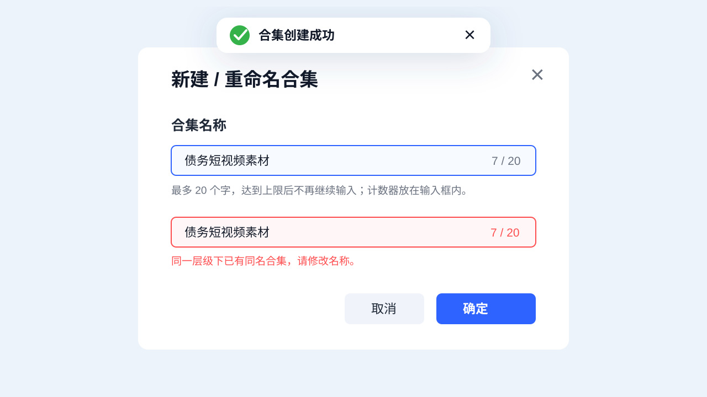
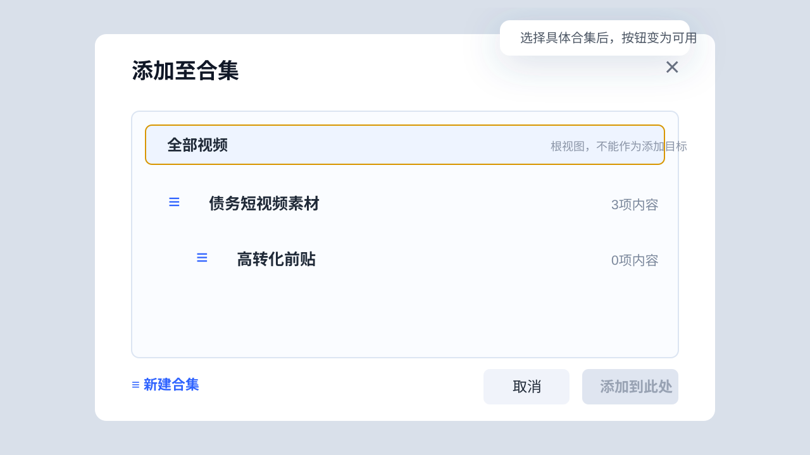
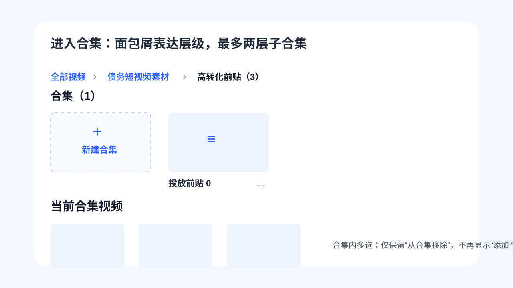
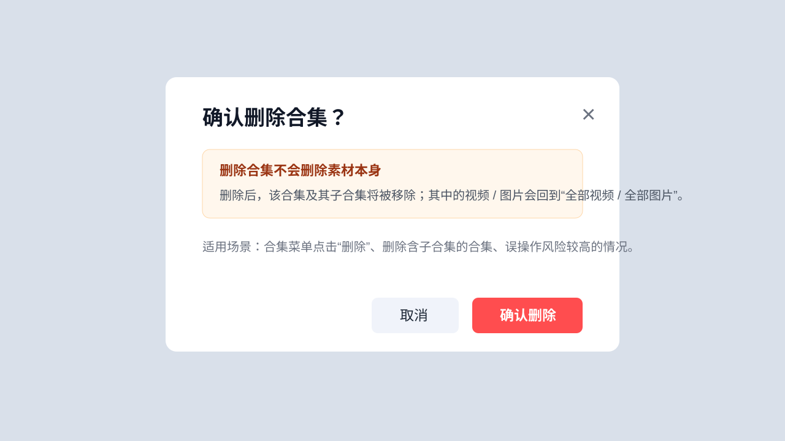
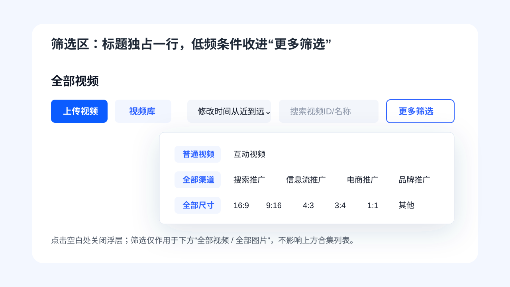
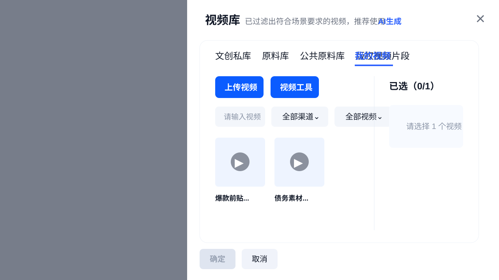

资产库合集管理交互状态说明
面向 UI / PM / 前端交接，覆盖投放库视频、投放库图片、原料库视频、原料库图片，以及可被生成链路调用的视频库抽屉。
1. 当前页面基准

页面保持 2.0 资产库原布局：合集独立放在素材列表上方；“全部视频 / 全部图片”标题单独占一行；筛选只作用于下方素材列表；多选批量操作栏保持吸底。
合集在上方
筛选不影响合集
批量栏吸底
文件夹文案统一为合集
2. 合集数量多

- 标题显示总数，例如“合集（10）”。
- 默认展示一行，合集较多时出现左右翻页箭头。
- 越新建的合集越靠近“新建合集”，排在越前面。
- 一级合集最多 10 个，子合集最多 11 个，超过后禁用新建并 Toast 提示。
3. 新建与重命名

- 合集名称最多 20 个字，达到上限后不再继续输入。
- 计数器放在输入框内部右侧。
- 空名称不可提交；同一层级不允许重名。
- 创建成功使用带绿色对勾的成功 Toast。
4. 添加至合集

- 添加是归类关系，素材仍保留在全部视频 / 全部图片中。
- “全部视频 / 全部图片”是根视图，不可作为添加目标。
- 默认选中根视图时，“添加到此处”置灰；选中具体合集后才可点击。
5. 进入合集与面包屑

- 面包屑表达层级：全部视频 > 一级合集 > 子合集。
- 上级可点击返回，最后一级为当前合集。
- 合集内多选只保留“从合集移除”，不再显示“添加至合集”。
6. 删除合集

删除合集使用强二次确认。删除的是合集容器及其子合集，不删除素材本身；其中的视频 / 图片会回到“全部视频 / 全部图片”。
7. 更多筛选

低频筛选统一收进“更多筛选”，减少主页面高度占用。浮层点击空白处关闭；筛选仅作用于下方素材列表，不影响上方合集。
8. 视频库抽屉

视频库抽屉是资产库的缩小版，可嵌入生成链路调用。抽屉保留搜索、渠道、视频范围、更多筛选 4 个主要控件，右侧展示已选内容。
9. 边界状态清单
| 场景 | 页面表现 | 交互规则 |
|---|---|---|
| 无合集 | 合集（0）+ 新建合集卡片 | 可直接创建一级合集 |
| 合集很多 | 默认一行 + 左右翻页 | 满一排整排切换，不足一排定位到末尾 |
| 一级合集 10 个 | 新建入口禁用 | 提示“合集数量已达上限，最多可创建10个合集” |
| 子合集 11 个 | 新建子合集禁用 | 提示“当前合集下子合集数量已达上限，最多可创建11个子合集” |
| 名称 20 字 | 计数 20 / 20 | 达到上限后不再继续输入 |
| 名称重复 | 输入框报错 | 同一层级不允许重名 |
| 长名称 | 单行省略 | Hover 展示 Tooltip 全量内容 |
| 删除素材 | 强确认弹窗 | 素材会从全部和所有合集同步删除 |
| 版权图片 | 上方合集正常展示 | 版权图片批量操作不显示添加至合集 |